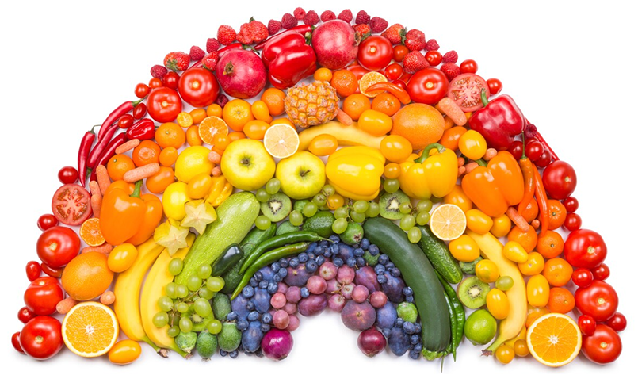

Het regenboogdieet: hoe meer kleuren hoe beter?
We geloven het niet zomaar: de zin en onzin van ons eten en drinken. Deze week: het regenboogdieet

Geschreven door Laura Obdeijn, journaliste van de krant Parool
‘Eet de regenboog. Hoe meer kleuren je eet, des te meer goede voedingsstoffen je binnenkrijgt,’ tipte een grote supermarkt. En toevallig verkocht het iets wat daarbij past: kleurrijke wintergroentenmix uit de oven. Ben je niet zo van de ovengroenten? Gooi iets anders in rood of oranje en die andere vijf kleuren in je mandje en je hebt alles wat je nodig hebt voor een gezond regenboogdieet. Het klinkt zo eenvoudig, maar klopt het ook?
Het is een beetje uit zijn verband gerukt, aldus Renger Witkamp, hoogleraar voeding aan de Wageningen Universiteit. “Zoals bij veel van dit soort voedings-wijsheden, is er een hele cultus omheen gebouwd.” En dat gaat wat ver, zegt hij. “Eet je namelijk uitsluitend volgens de regenboog, dan eet je ook een heleboel gezonde dingen niet.” Zoals zuivel (wit) en granen (bruin), waar je onder andere eiwitten en vitamine B12 uit haalt.
Maar er zit zeker wat in. “Veel gekleurde groenten en fruit zoals blauwe bessen, sinaasappels en paprika’s zijn wat betreft sommige voedingswaarden heel interessant. Ze zijn rijk aan vitamine C, vitamine A en anthocyanen. Deze helpen bijvoorbeeld bij het op peil houden van je weerstand.” Ook in onderzoeken zijn verbanden gelegd tussen veelkleurige voeding en gezondheid. “Al spelen daarin andere factoren mee. Mensen die zo eten bewegen bijvoorbeeld gemiddeld ook meer. Het wil dus niet zeggen dat je automatisch gezond bent als je volgens de regenboog eet. Het is geen garantie.”
Volgens Witkamp kan het in elk geval geen kwaad, behalve misschien voor je portemonnee (“Blauwe bessen zijn best duur”). Wat betreft gezondheid is het volgens hem echter een prima richtlijn. Eet je gevarieerd en je legt daar een regenboog overheen, dan zit je aardig in de goede richting. “Als we daardoor vaker naar de groenteboer gaan: prima.”